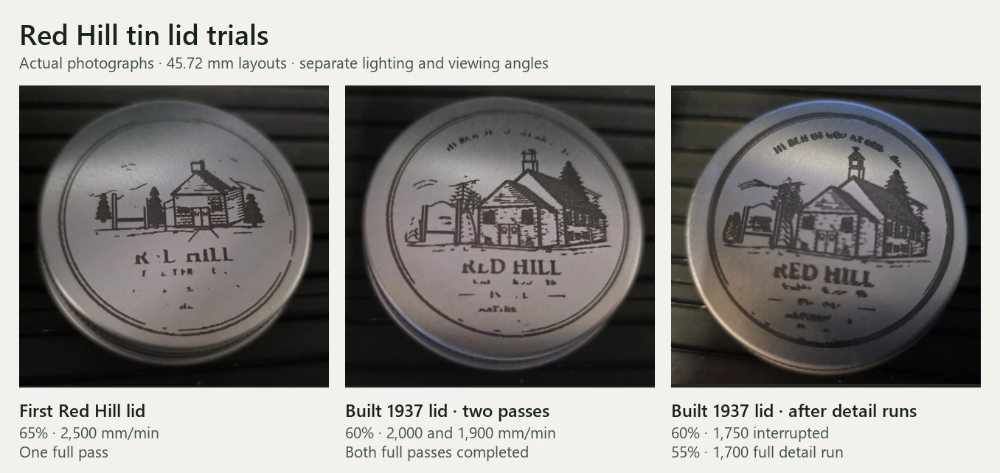
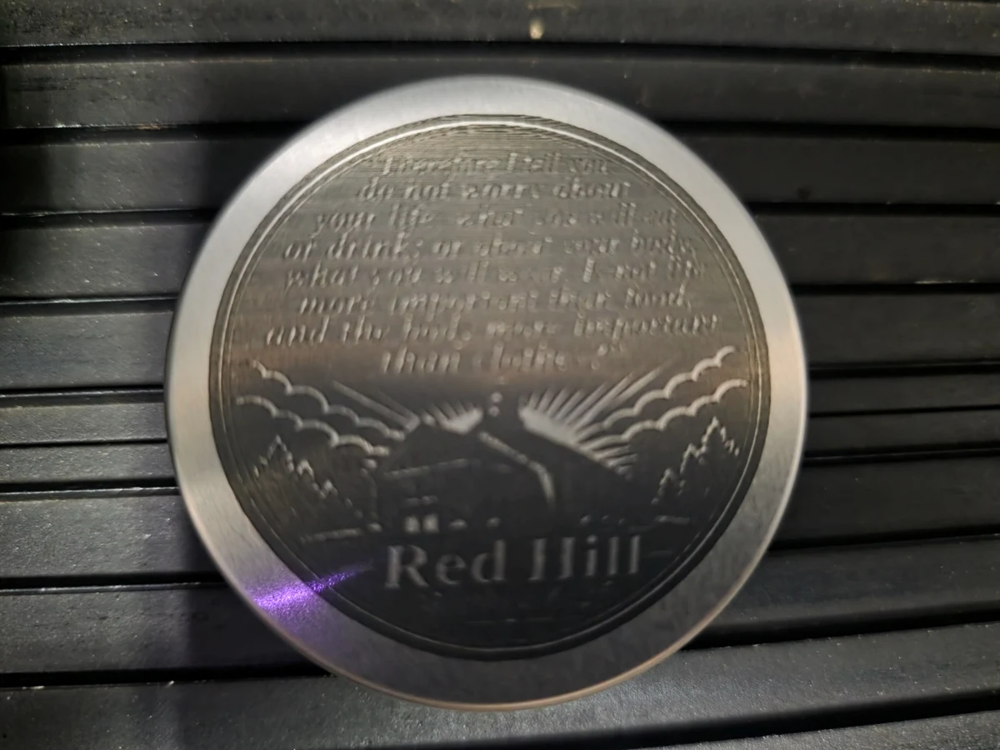
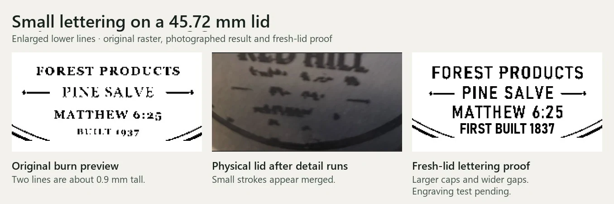

HASK workshop · Updated November 10, 2026
Red Hill tin lid engraving
Packaging prototypes
I adapted the Red Hill salve badge and chapel artwork to the flat face of a roughly two-inch reflective tin lid. I prepared the jobs in Laser Photo Studio, ran them on a Tronxy Ultrabot U20 diode laser, and compared the saved burn previews with the marks on the lids.
The salve badge trial took 11 minutes and 27 seconds of engraving. The main title and product name read clearly, while the smallest lines and some dense illustration details merged.
What the chapel tests showed
The 45.72 mm chapel layouts kept the illustration on the lid face. The first trial reproduced the chapel and trees, with gaps in parts of the rim and title. Later passes filled in some of the title and steeple. The smallest lower lettering stayed hard to read.

The full-verse lid, November 8–9
The full Matthew 6:25 front used a centered 45.72 mm layout. The first grayscale pass took about 29 minutes. A second, slower Floyd–Steinberg pass took about 38 minutes. The church and rays remained recognizable, but I judged the small lettering worse after the second pass.



The photos use different lighting and angles. Processing style, speed and accumulated exposure also changed, so the pair records the progression of this sample. A controlled comparison still needs fresh matching lids.
Checking the lettering at engraving size
Some original letters were about 0.9 mm tall. The preview already showed gaps in thin strokes, and more strokes merged on the tin. I compared the original raster, the lid photo and a revised proof with larger letters and wider spacing.

Software changes prompted by the trials
The November 9 investigation checked the saved jobs against their generated commands, then added an optional left-to-right scan direction to Laser Photo Studio for a controlled comparison. The local development version also gained saved setup and position recovery, an inspection park, and return-to-zero controls.
The final offline suite passed 77 tests, including simulated jobs and recovery checks. Physical lettering quality remains unresolved, and the new controls still need validation on the machine. A higher-power comparison grid has been prepared and checked offline for a fresh matching lid. Its physical result is still pending.